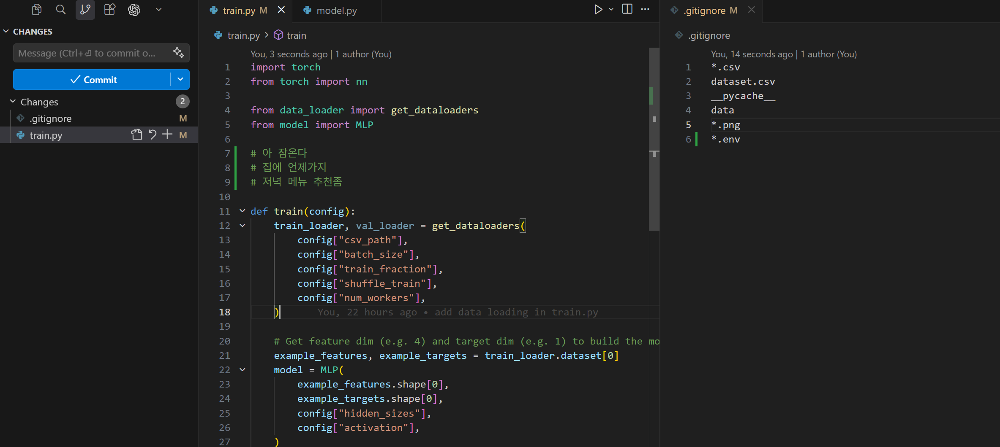
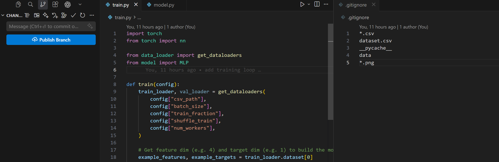
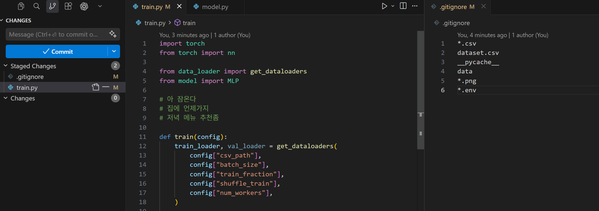
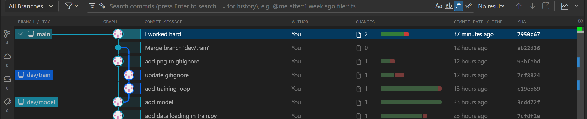
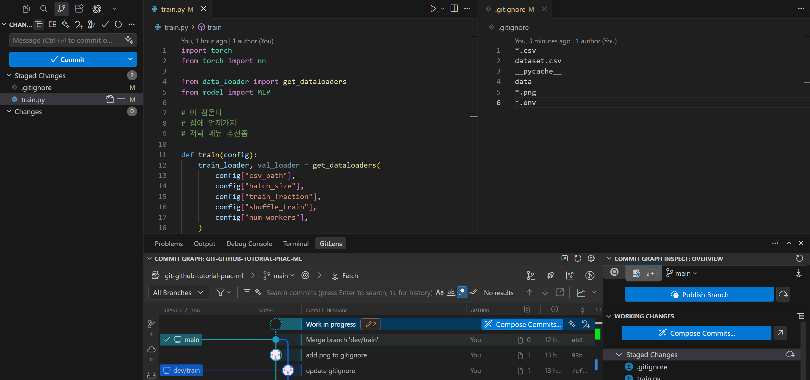
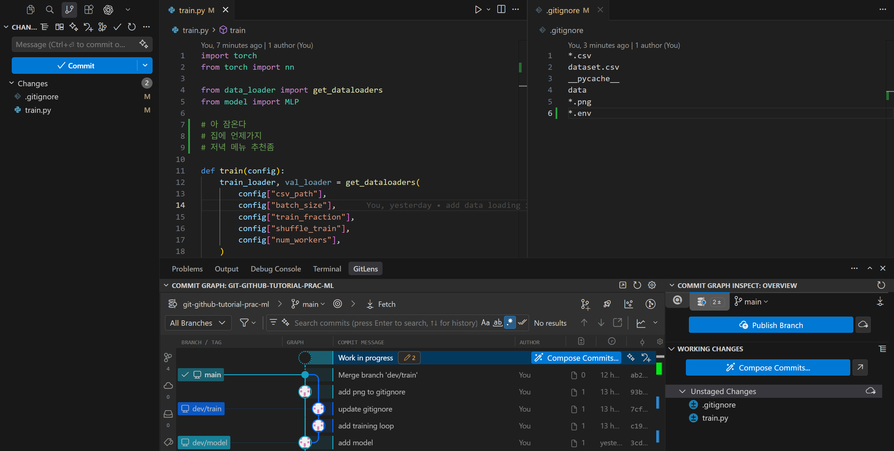
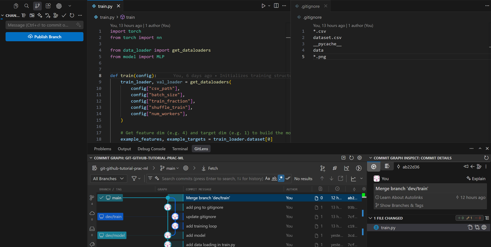
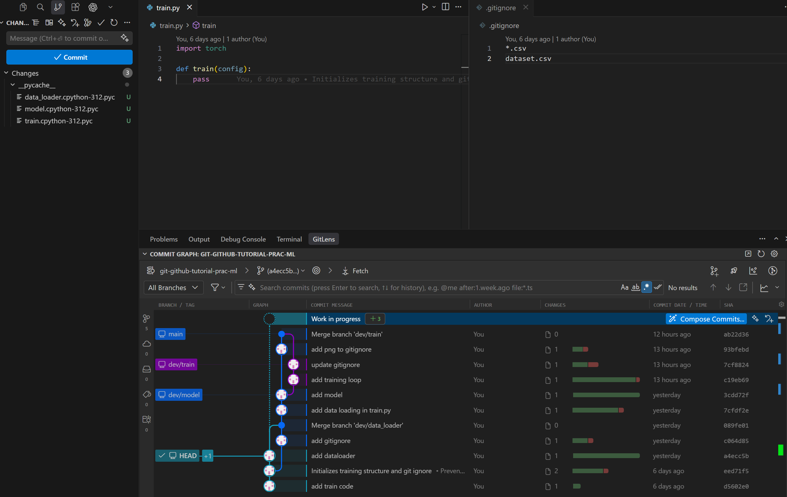

Going back
What is HEAD
HEAD is a pointer to the commit you are currently on, normally the tip of your active branch.
%%{init: {'theme': 'base', 'themeVariables': {'git0': '#4A90D9', 'git1': '#E07B53', 'gitBranchLabel0': '#ffffff', 'gitBranchLabel1': '#ffffff', 'commitLabelColor': '#333333', 'commitLabelBackground': '#ffffff'}} }%%
gitGraph
commit id: "A"
commit id: "B"
commit id: "C (HEAD)"When you make a new commit, HEAD moves forward with it.
When you switch branches, HEAD moves to that branch's tip.
Detached HEAD
If you check out a specific commit directly (git checkout <hash>), HEAD points to that commit instead of a branch tip. You can look around the file at that commit, but any new commits won't belong to any branch until you create one.
Undo before a commit
Unstaged changes
Let's make changes that you don't want to include.

Drop unstaged changes in a file (i.e., removes all unstaged changes).
# git restore <file>
git restore train.py
# Or, restore all files in your project to the last commit state
git restore .
Expand to see VS Code view

Staged changes
Let's stage (by mistake) the unintended changes:

You can unstage those:
# git restore --staged <file>
git restore --staged train.py
git restore --staged . # unstage all changes.
Expand to see VS Code view
After commit
Let's commit (by mistake) those unintended changes.
Fix the last commit (small correction)
To modify the most recent commit (for example, update the commit message or add more staged changes), use git commit --amend. You can revise the commit message or staged files.
git commit --amend will open the commit message editor. Here’s what it looks like in nano and vim:
After finishing amend, you see the changed commit.

Warning
Don't amend a commit if you've already pushed your branch to a shared remote branch.
Note
In the above example, we only amended the commit message, but you can also amend any files, stage again, commit with different message.
Undo commits
Use git reset to move HEAD (and the branch pointer) back to a previous commit.
| Mode | Staging area | Working directory |
|---|---|---|
--soft |
keeps changes staged | unchanged |
--mixed (default) |
unstages changes | unchanged |
--hard |
clears staging area | discards all changes |
Soft
Reverted changes remain in your staging area (ready to commit again).
git reset --soft HEAD~1 # Undo last commit, keep changes staged
git reset --soft <hash> # Undo up to that commit, keep all reverted changes staged
For example, use this if you want to revise several recent commits into a new one.

Mixed (default)
Reverted changes remain in your working directory as unstaged modifications.
git reset HEAD~1 # Undo last commit, unstage changes
git reset <hash> # Undo up to that commit, unstage all reverted changes
# Or, git reset --mixed
For example, use this if you want to selectively re-stage and re-commit only some of the reverted changes.

Hard
Reverted changes are permanently lost from both the staging area and working directory.
git reset --hard HEAD~1 # Undo last commit, discard all changes
git reset --hard <hash> # Undo up to that commit, permanently discard all reverted changes
For example, use this when you want to completely throw away recent commits and start clean.
Warning
Don't hard reset if you are working on a shared branch. Use revert below.

Revert
git revert creates a new commit that undoes a previous one. That is safe for shared/remote branches.
git revert <commit-hash> # undo a specific commit
git revert HEAD # undo the latest commit
git revert -n <commit-hash-A>..<commit-hash-B> # undo multiple subsequent commits
Note
Unlike reset, revert does not rewrite history, so it is safe to push to a shared remote branch.
Browse an old version
